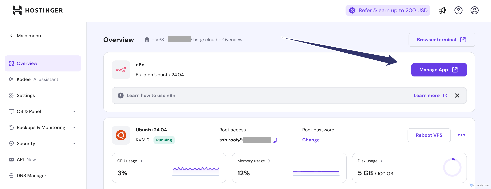

How to Update n8n on a VPS (e.g., Hostinger) to Get the New MCP Nodes
If you're self-hosting n8n on a VPS (like Hostinger) and want to take advantage of the new MCP nodes, you're in luck — updating your n8n instance is quick and painless if you're using Docker.
Follow the concise guide below to upgrade your deployment and unlock the latest features.
Step 1: SSH into Your VPS
Use your preferred terminal or the browser-based terminal provided by your host. For example:
ssh root@your-server-ip
Or using the browser console, just click this button on hostinger

Step 2: Locate Your docker-compose.yml File
Usually, this file is in your root's home directory:
cd ~
nano docker-compose.yml
Step 3: Update the Image Tag to "next"
In the docker-compose.yml, find the line with the image key under the n8n service:
image: n8nio/n8n:latest
Change it to:
image: n8nio/n8n:next
This ensures you're pulling the latest cutting-edge version, which includes the MCP nodes.
📌 You can browse available image tags at: https://hub.docker.com/r/n8nio/n8n/tags
Step 4: Stop the Current Containers
Depending on your Docker Compose version, run one of the following:
docker compose down
or older versions:
docker-compose down
Step 5: Pull the New Image
Fetch the updated next image:
docker compose pull
Step 6: Start Everything Back Up
Spin up your containers again:
docker compose up -d
You're All Set ✅
Once the containers restart, your n8n instance will be running the latest version with MCP node support. Check your browser dashboard and start building with the new tools!
If you want more content like this, consider joining the Digital Cognition Club — where practitioners are building the future of AI and automation.